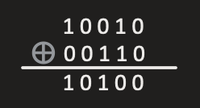

July 7, 2025
The XOR operation between two numbers P and Q can be looked in a different way as the bitwise sum modulo 2 on the bits of P and Q. Consider P = 10010 and Q = 00110.
Starting from leftmost, we verify the above statement :
- (1 + 0) % 2 = 1
- (0 + 0) % 2 = 0
- (0 + 1) % 2 = 1
- (1 + 1) % 2 = 0
- (0 + 0) % 2 = 0
A binary number is in the form of a ℤ2d vector where d is the number of bits in the binary number and 2 represents the allowed integer values in the vector viz., {0, 1}. So, the result of a XOR operation between two numbers P and Q is the vector addition mod 2 of two ℤ2d vectors P and Q.
P + Q = P ⊕ Q
For subtracting Q, XOR with Q on RHS to obtain P on RHS,
P = P ⊕ Q ⊕ Q
P = P
Now, given an array A of N non-negative integers, we need to find the Basis B for the elements of the array when represented as ℤ2d vectors in form of a bitmask.
Some points to note -
- The size of the basis B for a d-dimensional Vector Space can not exceed d.
- The basis vectors are independent, i.e., none of them can be expressed as a linear combination of a subset of basis vectors (other than the vector itself).
Algorithm of XOR
The algorithm goes as follows:
- Assume we have the basis for all the vectors till index 'i' (i < N) and we need to check if A[i + 1] can be represented as a linear combination of current basis vectors.
- If not so, then add A[i + 1] to our basis, otherwise increment the index. We can effectively check this if we have all our basis vectors differ by the first set bit index (from left), let's denote it by msb(B[j]).
- Start checking from the left bits, if index 's' is set in current value of A[i + 1] and there is no basis vector with msb(B[j]) = s, then no linear combination of the existing basis vectors can represent current value of A[i + 1].
- So, insert current value of A[i + 1] in the basis.
- Otherwise, subtract B[j] with msb = s from A[i + 1] by XORing with B[j] and continue with other bits.
- If at end A[i + 1] is a null vector, then it can be represented as linear combination of the current basis vectors, otherwise not and has to be inserted in the basis.
Example
Let's consider an array A = [3, 10, 5]. We want to find the XOR basis for this array.
Step-by-step construction of basis:
- Start with an empty basis.
- Insert 3 (binary:
011) → No basis vector yet, so add 3 to basis.
Basis = [3] - Next element: 10 (binary:
1010) → Not representable using 3, so add it to basis.
Basis = [3, 10] - Next element: 5 (binary:
0101) → Check XOR with current basis:- 5 ⊕ 3 = 6
- 6 ⊕ 10 = 12
- Final result ≠ 0 → Not representable → Add 5 to basis.
So the basis for array A = [3, 10, 5] is: [3, 10, 5].
Common Use Cases in DSA:
- Finding Maximum XOR Subset
- Minimum XOR Pair
- Linear Independence in Bitmasking Problems (e.g., Codeforces 706D - Vasiliy's Multiset)
Resources Used......
- Geeks for Geeks for information - Read here
- Google websites for examples..
- Codeforces